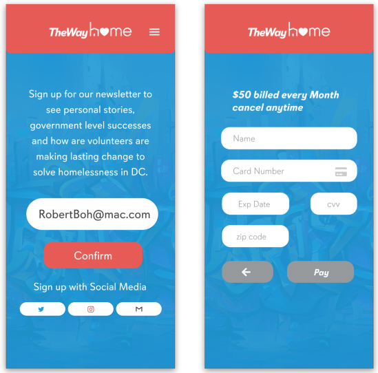

User Flow
Wireframes

Style Tyle
Hi fidelity Website Prototype

Hi fidelity Mobile Prototype

Tools:Adobe XD, Figma, Google drive, and trello.
To enhance the overall user experience of “The Way Home”, a non-profit with the mission of ending chronic homelessness in Washington D.C.
- Create clear call-to-action buttons to help users easily engage with the organization.
- Redesign the website’s interface and content, based on our 3 main key research insights, to make it more engaging and informative.